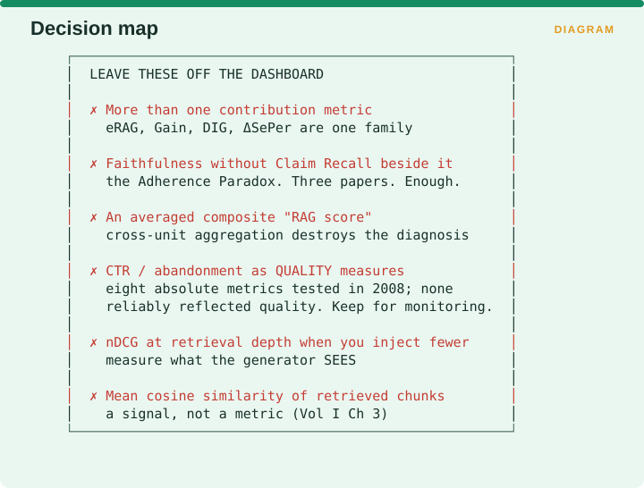
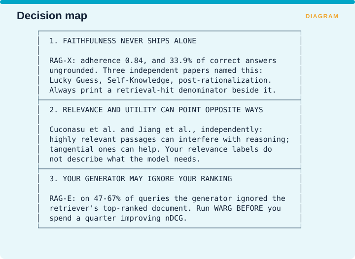

Measuring Retrieval › Chapter 15 - The Narrowing Exercise
Chapter 15 - The Narrowing Exercise
15.0 Seventy metrics down to eight
Everything so far has been a catalogue. This chapter answers the question the catalogue provokes, which is what to actually instrument.
The governing principle comes from Volume I’s conclusion: a dashboard carrying one strong metric per dimension beats a dashboard carrying nine metrics from a single dimension. Nine correlated metrics moving together feel like corroboration and are one measurement wearing nine hats.
15.1 The decision tree

Start by asking whether you have golden answers.
If you do not, take the reference-free track. For correctness use RAGAS faithfulness in its three-metric paper form. For alignment use DIG or WARG. For integrity use RBO against a frozen baseline. For efficiency use Pairwise Redundancy and TTFT at the 95th percentile. And add the RAG-off comparison as a leakage check, because without golden answers that comparison is the strongest evidence you have that retrieval is doing anything.
If you do have golden answers, the next question is whether you show citations to users. If you do, take the attribution track: RAGChecker’s Claim Recall, Self-Knowledge and Hallucination for correctness, plus ALCE citation precision; CUE quadrants for alignment; RBO with a version-sensitive set for integrity; and tokens per query with EHR@k for efficiency.
If you do not show citations, ask whether retrieval is single-shot or agentic. Single-shot takes the core track in §15.2. Agentic takes the core track plus retrieval calls per answer and the redundant-query rate, and that is largely uninstrumented territory where you will be building your own measurements.
15.2 The Core Track - the eight-metric starter kit
For a typical reference-based, single-shot RAG system.

The eight are Claim Recall from RAGChecker, because it sets the ceiling on all downstream quality; Self-Knowledge, because it is the Lucky Guess rate and nothing else measures it; Hallucination, because it is the classic failure; nDCG at your injected k, for continuity with published work and comparability; one contribution metric chosen from eRAG, DIG or ΔSePer, and exactly one; RBO against a frozen baseline, as the cheapest real drift metric available; Pairwise Redundancy, because it reveals quality waste without needing labels; and TTFT at the median and 95th percentile, because that is the latency users actually feel.
Two further lines are non-negotiable and are not metrics so much as context without which the metrics mislead. Report the average claim count per response, because otherwise an improvement in hallucination rate is indistinguishable from the model simply saying less. And report accuracy both with retrieval on and with retrieval off, because otherwise you do not know whether retrieval earns its keep.
15.3 What NOT to instrument
Equally important and rarely said.

Leave off more than one contribution metric, since eRAG, Gain, DIG and ΔSePer are one family asking one question. Leave off faithfulness unless Claim Recall sits beside it, which is the Adherence Paradox that three separate papers have now named. Leave off any averaged composite RAG score, because aggregating across units of analysis destroys the diagnosis that made the components worth computing. Leave off clickthrough and abandonment as quality measures, since eight absolute metrics were tested in 2008 and none reliably reflected quality, and keep them for monitoring instead. Leave off nDCG measured at retrieval depth when you inject fewer documents than that, and measure what the generator actually sees. And leave off mean cosine similarity of retrieved chunks, which is a signal rather than a metric, as Volume I Chapter 3 sets out.
15.4 The 90-day rollout
Sequenced by cost and dependency rather than by importance.

Week 1 is pure instrumentation and costs nothing. Freeze a baseline of 500 queries with their top-k results, stamped with the embedder version and k. Pin the judge model to a dated snapshot. Freeze a 100-item human-labelled anchor set. Time a full index rebuild and write the number down. Trace your actual injected k rather than the k you retrieve.
Weeks 2 to 4 are the cheap diagnostics. Run RAG-on against RAG-off on your benchmark, and do that one first. Compute the semantic test coverage of your evaluation set. Measure Pairwise Redundancy at your current k. Compute the gap between MAP and bpref as a judgment-distortion estimate. Run the position-bias test on your judge by swapping A and B and re-scoring.
Month 2 is the k-sweep from Volume I §12.3. Run k across 1, 3, 5, 10, 20 and 50, recording recall, your quality metric, redundancy, tokens and TTFT at each. Plot quality against tokens, find the knee, and set k there.
Month 3 is the diagnostic layer. Run RAGChecker’s full nine offline and promote three. Run CUE quadrants on a sample. Run WARG once to find out whether the generator is using your ranking at all. Build a 50-question version-sensitive set.
Then ongoing: RBO against baseline monthly, the expensive diagnostics per release, the anchor set and Krippendorff’s α on every judge change, and Jaccard with RankSimilarity at your k on every embedder change.
Week 1 is the highest-leverage work in this entire book, and none of it requires a metric. Teams that skip it discover six months later that they cannot answer whether anything has changed, which forecloses the entire integrity dimension permanently, because there is no way to reconstruct a baseline after the fact.
15.5 The three findings to carry into every design review

First, faithfulness never ships alone. RAG-X measured adherence at 0.84 alongside 33.9% of correct answers being ungrounded, and three independent papers named that failure as Lucky Guess, as Self-Knowledge and as post-rationalization. Always print a retrieval-hit denominator beside it.
Second, relevance and utility can point in opposite directions. Cuconasu et al. and Jiang et al. found independently that highly relevant passages can interfere with a model’s reasoning while tangential ones can help, which means your relevance labels do not describe what the model needs.
Third, your generator may be ignoring your ranking. RAG-E found that on between 47% and 67% of queries the generator ignored the retriever’s top-ranked document, so run WARG before you spend a quarter improving nDCG.
Measuring Retrieval · Madhava Gaikwad · First edition, September 2026